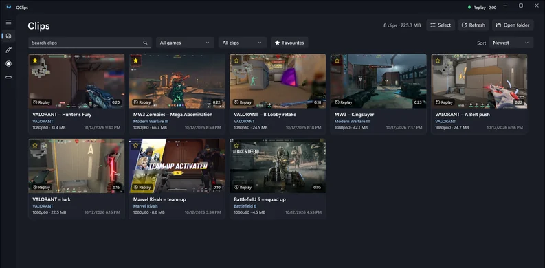
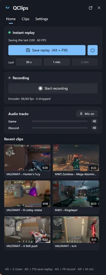
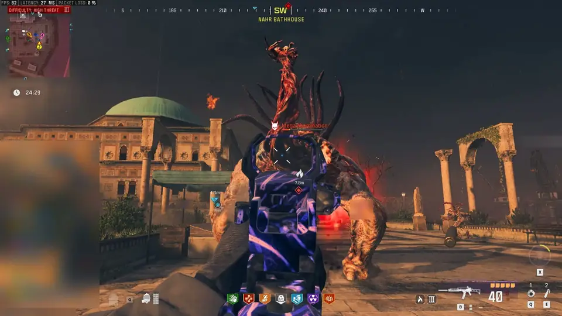
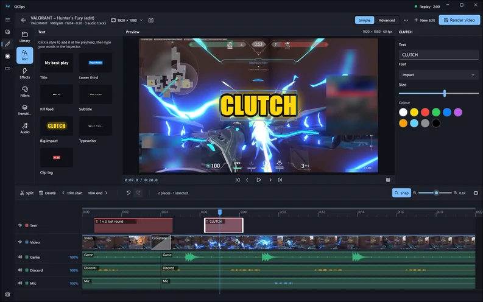
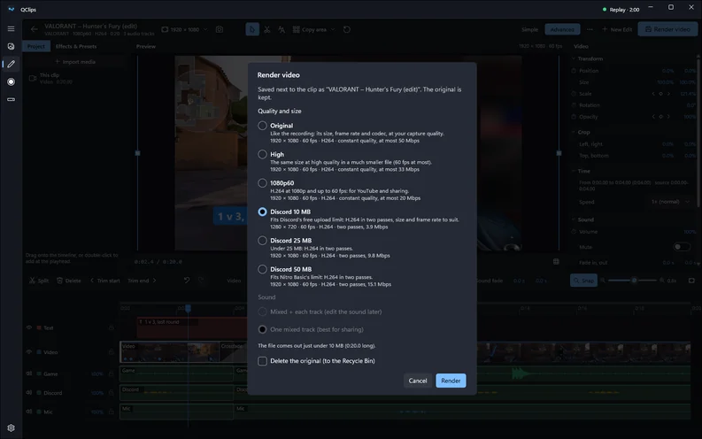
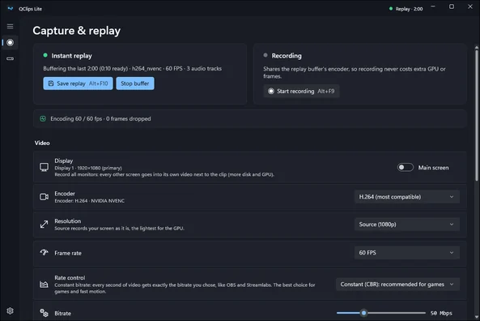

العب أول، وسجّل بعدين.
QClips يحفظ لك دايم آخر كم دقيقة من لعبك على جهازك. إذا صار شي يستاهل، اضغط Alt+F10 أو قل «سجّل» بس، وتنحفظ اللقطة. قصّها، وحط عليها ترجمة، وشاركها.
مجاني لويندوز 10، إصدار 2004 وفوق، وويندوز 11، بنظام 64‑بت. بدون حساب، بدون إعلانات، وبدون جمع بيانات.




- 5ميقاحجم ملف التثبيت، والباقي يتحمّل وأنت تثبّته.
- 12ملّي ثانيةتقريباً فرق بين الصوت والصورة، حسب تجاربنا على 60 و120 فريم بالثانية.
- 2لغتينعربي وإنجليزي: البرنامج كله، والأوامر الصوتية، والترجمة.
- 4إعداداتOriginal و High وديسكورد 20 ميقا وديسكورد 50 ميقا، والملف يطلع ضمن الحد.
قلها بس. وانحفظت.
يدينك مشغولة؟ قل الجملة، حتى وأنت تسولف، بالعربي أو الإنجليزي. QClips يلقطها على جهازك ويحفظ لك الإعادة.

- على جهازك. كل اللي يسمعه المايك ينفهم على جهازك وما يطلع منه أبد، ويشتغل بدون نت.
- أنت تختار الجملة وتحدد كم تبي مدة اللقطة. 15 أو 30 ثانية، أو دقيقة أو دقيقتين، أو الإعادة كلها.
- جرّبها أول. اضغط زر التجربة، وبيطلع لك وش سمع وأي جملة تعرّف عليها.
- ما تحتاج تحمّل شي إضافي. ملفات التعرّف على الصوت بالعربي والإنجليزي تجي مع QClips، بأي نسخة تثبّتها. نموذج التعرّف على الصوت بالعربي Powered by Moonshine AI.
Alt+Z يفتح اللوحة. وأنت في اللعبة.
لوحة تطلع لك من طرف شاشتك الرئيسية فوق اللعبة، بدون ما تطلع من لعبتك.
- احفظ الإعادة كلها، أو آخر جزء منها بس. آخر 30 ثانية أو دقيقة أو دقيقتين.
- قصّ سريع. اسحب الطرفين وحدد اللي تبيه، واحفظ المقطع بدون ما تفتح المحرر.
- أنت تختار وش يطلع. خلّ اللوحة وتنبيه الحفظ وشريط الأداء ما يطلعون في مقاطعك وبثّك.
- اختصار لكل شي. Alt+F10 يحفظ الإعادة، و Alt+F9 يسجّل، و Alt+M للمايك. وتقدر تغيّر أي اختصار من الإعدادات أو من اللوحة نفسها.
جرّبها: افتح اللوحة، واحفظ مقطع، أو افتح آخر مقطع وقصّه بسرعة. هذي صور فعلية للوحة وهي شغّالة فوق اللعبة، بواجهة البرنامج بالإنجليزي.

قصّ اللحظة. وشاركها وين ما تبي.
- محرر واحد. قصّ وقسّم وغيّر السرعة بدون ما تتغيّر نبرة الصوت، وجمّد لقطة، وحط تأثيرات وفلاتر وانتقالات، كلها على تايم لاين واحد.

- حط عناوين وترجمة. اختَر شكل العنوان اللي تبيه، أو خلّ QClips يكتب الترجمة كلمة بكلمة، بالعربي، مع تركيز على الخليجي والسعودي، ويفهم المصري والشامي والعراقي بعد، أو بالإنجليزي. وكل هذا على جهازك. والقص التلقائي يشيل الأجزاء الساكتة.

- كل صوت على تراك لحاله. اللعبة والدردشة الصوتية والمايك وأي جهاز صوت، مع تراك Mixed للمشاركة. صوت خويك عالي؟ وطّه. وصوت البرامج ما يلمس اللعبة أبداً.
- جاهز لديسكورد. Original و High وديسكورد 20 ميقا و50 ميقا، يصدّر المقطع على مرحلتين عشان يطلع حجمه ضمن الحد المسموح. أو شارك مقطعك على تيك توك ويوتيوب شورتس وريلز إنستقرام وX، وأنت اللي تضغط زر النشر.

خفيف على جهازك. وبعيد عن لعبتك.
أو خلك على التسجيل بس
QClips Lite يعطيك التسجيل بس: الإعادة والتسجيل والاختصارات، ومعها نافذة إعدادات صغيرة تفتحها من أيقونة البرنامج جنب الساعة. وما يظهر شي فوق لعبتك: صوت الحفظ يعلمك إن المقطع انحفظ. وتقدر ترجع للنسخة الكاملة متى ما تبي، وكل مقاطعك وإعداداتك تبقى معك.

خفيف
- كرت الشاشة يشتغل عنك. يستخدم ترميز كرت الشاشة، NVIDIA NVENC أو AMD AMF أو Intel Quick Sync، بصيغة H.264 أو HEVC أو AV1، ويخلّي المعالج للعبة. وإذا جهازك ما يدعم هالترميز، يسجّل باستخدام المعالج.
- الحفظ ما ينتظر. الاختصارات والأوامر الصوتية تشتغل حتى لو المحرر مشغول.
- تحديثات صغيرة. يحمّل بس الأشياء اللي تغيّرت، وغالباً حجم التحديث أقل من ميقا، وما يتثبّت التحديث وأنت تسجّل.
يشتغل بدون ما يتدخل بأنظمة مكافحة الغش
- Windows Graphics Capture. يسجّل الشاشة بنفس طريقة أدوات ويندوز، والصوت عن طريق نظام الصوت في ويندوز.
- بدون حقن وبدون hooks. ما يحمّل أي شي داخل اللعبة، ولا يستخدم hooks للكيبورد أو الماوس.
- ما يتدخل بتشغيل اللعبة، وما يحتاج صلاحيات مسؤول. ما يفتح عملية اللعبة ولا يقرأ بياناتها، ويشتغل بدون صلاحيات مسؤول.
خصوصيتك
- بدون حساب وبدون إعلانات. مجاني، وما فيه شيء تسجّل فيه.
- بدون جمع بيانات. ما يجمع بيانات استخدام، ولا تحليلات، ولا تقارير أعطال. ومقاطعك تبقى على جهازك لين تشاركها.
- الصوت على جهازك. اللي يسمعه المايك ما يطلع من جهازك أبداً.
الصوت والصورة مع بعض، وين ما تشغّل المقطع.
QClips يعرف بالضبط متى تسجّل كل جزء من الصوت، بدل ما يخمّن التأخير. وفي تجاربنا، كان الفرق بين الصوت والصورة حوالي 12 ملّي ثانية على 60 و120 فريم بالثانية، سواء شغّلناه بمشغّل ويندوز أو ديسكورد، وعلى كل التراكات.
اسحب المؤشر. اللمعة بالصورة والضربة بالصوت لازم يجون مع بعض. (الخط الزمني من اليسار لليمين مثل مشغّلات الفيديو.)
الجديد في 2.1.
ترجمة، ومشاركة، ولقطات شاشة أفضل، وQClips بالعربي. ومع 2.1.1: تتنقّل بسهولة أكثر، وتحفظ أسرع، والأوامر الصوتية تجي جاهزة مع البرنامج، ولوحة Alt+Z دايماً على شاشتك الرئيسية.
كل الجديد في 2.1
عدّل وشارك
- ترجمة نصية. المحرر يكتب لك الكلام اللي بالمقطع كله، كلمة بكلمة، بالعربي أو الإنجليزي، وكل الشغل على جهازك. عدّل أي سطر، واختَر الشكل اللي تبيه، وخلّ الترجمة تظهر على الفيديو أو احفظها بملف .srt.
- القص التلقائي. زر واحد يشيل الأجزاء الساكتة، وأنت تحدد كم تبي يخلّي قبل الكلام وبعده.
- شارك من داخل QClips. تيك توك ويوتيوب شورتس وريلز إنستقرام وX: قصّ المقطع، واختَر المقاس العمودي، وحط عنوان. وأنت اللي تضغط زر النشر في الموقع نفسه، وQClips ما ينشر عنك أبداً.
- إعدادات تصدير أبسط. Original و High وديسكورد 20 ميقا وديسكورد 50 ميقا.
وفي باقي البرنامج
- لقطات الشاشة. صوّر شاشة وحدة أو كل الشاشات، أو النافذة اللي قدامك، أو جزء تختاره، وتنسخ اللقطة على طول.
- انسخ النص من الشاشة. حدد الجزء اللي تبيه، ويننسخ الكلام اللي فيه، بالعربي والإنجليزي ولغات ويندوز الثانية عندك.
- شاشات HDR. المقاطع تطلع صح في كل مكان، أو سجّل HDR10 إذا تبيه.
- QClips بالعربي. كل الصفحات والقوائم ولوحة Alt+Z، من اليمين لليسار، والمثبّت بعد.
- الإعدادات مرتّبة بصفحات مثل ويندوز 11، وتقدر تبحث فيها. وتقدر توقف التسجيل شوي وترجع تكمّله بنفس الملف.
لقطتك الجاية، محفوظة.
QClips مجاني. يتثبّت على حسابك في ويندوز بس، وما يحتاج تسجّل حساب جديد، ويحدّث نفسه بنفسه.
كل شي فيه، حتى الأوامر الصوتية. مناسب إذا النت عندك ضعيف.
حمّل نسخة التثبيت الكاملةأول مرة تثبّته، ممكن تطلع لك رسالة من ويندوز تقول «قام Windows بحماية الكمبيوتر» (Windows protected your PC). ملف التثبيت للحين ما عليه توقيع رقمي. اضغط «مزيد من المعلومات» (More info) بعدها «التشغيل على أي حال» (Run anyway). ملفات التحميل تجيك من صفحة إصدارات QClips الرسمية على GitHub.
تحتاج ويندوز 10 إصدار 2004 وفوق، أو ويندوز 11، بنظام 64‑بت. والأفضل يكون عندك كرت شاشة يدعم ترميز الفيديو. الأوامر الصوتية تجي جاهزة مع البرنامج. شوف كل الإصدارات ووش الجديد
عندك سؤال؟ أو تبي تشارك مقاطعك وتلقى مساعدة من لاعبين غيرك؟ انضم لسيرفر QClips في ديسكورد.
أسئلة تتكرر كثير
تطلع لي رسالة «Windows protected your PC»، عادي؟
إيه، ملف التثبيت للحين ما عليه توقيع رقمي، وعشان كذا يطلع تنبيه SmartScreen أول مرة. اضغط «مزيد من المعلومات» (More info) بعدها «التشغيل على أي حال» (Run anyway).
حمّل QClips من هالموقع أو من صفحة الإصدارات على GitHub وبس.
وين تنحفظ مقاطعي؟
تلقاها بمجلد الفيديوهات، داخل Videos\QClips\Clips، وكل لعبة أو برنامج له مجلد لحاله. ولو تبيها كلها في مجلد واحد، اختر «كل المقاطع في مجلد واحد» من التخزين (اسم اللعبة يبقى في اسم الملف).
من الإعدادات، قسم التخزين، تشوف المساحة اللي تاخذها، وتقدر تنقل كل المقاطع لقرص ثاني مع تعديلاتها ومفضّلاتها، وتقدر تحط حد للمساحة إذا تبي (الأقدم يروح لسلة المحذوفات، والمقاطع اللي حاطّها بالمفضّلة ما تنحذف).
صدق مجاني؟ وأحتاج أسوي حساب؟
إيه، مجاني، بدون إعلانات وبدون حساب. ما فيه تخزين سحابي، وما يرفع أي شي: مقاطعك تبقى على جهازك لين تشاركها أنت.
QClips يجمع أي بيانات؟
لا. ما يرسل بيانات استخدام ولا تحليلات ولا تقارير أعطال. يتصل بالنت بس عشان يشيّك على التحديثات، وعشان يحمّل نماذج الترجمة مرة واحدة إذا استخدمتها، ولما تشارك مقطع على موقع بنفسك.
كم حجم نماذج الصوت؟
حوالي 200 ميقا للعربي والإنجليزي مع بعض، وتجي مع QClips لما تثبّته، فما تحتاج تحمّل شي بنفسك، والأوامر الصوتية تشتغل بدون إنترنت.
ممكن يسبب لي باند في الألعاب اللي فيها مكافحة غش؟
QClips ما يتعامل مع الألعاب أبداً: لا حقن ولا hooks، وما يفتح عملية اللعبة، وما يحتاج صلاحيات مدير. يسجّل الشاشة بـ Windows Graphics Capture مثل أدوات ويندوز نفسها، والصوت عن طريق نظام الصوت في ويندوز.
برنامج NVIDIA يستخدم Alt+Z و Alt+F10 بعد. وش أسوي إذا عندي الاثنين؟
غيّر الاختصارات في واحد منهم. في QClips افتح الإعدادات، الاختصارات (أو الاختصارات في لوحة Alt+Z)، اضغط على اختصار واضغط الأزرار الجديدة. Backspace يمسحه، وزر الاستعادة يرجّع كل الاختصارات مثل ما كانت.
وش مواصفات الجهاز المطلوبة؟
ويندوز 10 إصدار 2004 (بناء 19041) أو أحدث، أو ويندوز 11، 64‑بت. يُفضَّل كرت شاشة فيه مرمّز فيديو (NVIDIA NVENC أو AMD AMF أو Intel Quick Sync)، وبدونه يسجّل QClips بالمعالج. البرنامج ياخذ حوالي 250 ميقا، غير المساحة اللي تحتاجها مقاطعك.
يدعم العربي؟
إيه، البرنامج كله ولوحة Alt+Z، وحتى التثبيت بالعربي من اليمين لليسار. QClips يشتغل بنفس لغة ويندوز عندك، ولو تبي تختار بنفسك: الإعدادات، عام، اللغة. والأوامر الصوتية والترجمة تفهم العربي والإنجليزي. والموقع موجود بالإنجليزي بعد.
الصور اللي في الصفحة حقيقية؟
إيه، كل صور واجهة البرنامج اللي بالصفحة مأخوذة فعلياً من QClips على ويندوز، واللعب اللي فيها حقيقي بعد، سجّله فريق QClips: VALORANT, Call of Duty: Modern Warfare III, Battlefield 6, Marvel Rivals. ومموّهين أسماء اللاعبين والشات وأي شي شخصي.